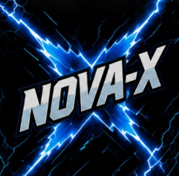

SEMANA 1
O chamado
As equipes são formadas. Cores, símbolos e identidades começam a ganhar vida.
VII JOGOS INTERESTELARES · EFEITO NUCLEAR
Quatro equipes entram em órbita. Nós vestimos azul, ativamos a energia da Nova-X e vivemos dois meses de um verdadeiro efeito nuclear que vai muito além da competição.
NOVA-X · EQUIPE AZUL
Energia, união e atitude

EQUIPEO Interestelar é um evento realizado pelo Colégio Nossa Senhora Auxiliadora, em Campo Grande, no qual os alunos se dividem em quatro equipes para viver uma grande experiência coletiva. Em 2026, elas são Nova-X, Fusion, Atomix e Nexus.
No grande dia, cada equipe encara desafios culturais, intelectuais e esportivos. Mas o que acontece antes é o que transforma uma competição em algo inesquecível.
Para a Nova-X, o Interestelar começa quando a primeira ideia surge, o primeiro grito é ensaiado e uma reação em cadeia azul toma conta da escola.
✦A preparação é parte da experiência. Cada etapa aproxima a equipe, revela talentos e constrói a energia que toma conta do colégio.
As equipes são formadas. Cores, símbolos e identidades começam a ganhar vida.
Ensaios, treinos, estratégia e muita colaboração. Cada pessoa encontra seu papel.
Todo o esforço entra em órbita. É hora de viver cada desafio intensamente.
Diferentes habilidades entram em jogo. No Interestelar, toda forma de talento tem espaço para brilhar.
Uma prova teatral em que cada time recebe uma obra literária para trabalhar.
↗Estratégia para encontrar respostas sob pressão.
↗Curiosidade e repertório de todo o time.
↗Técnica, foco e espírito esportivo.
↗Energia e cooperação até o último segundo.
↗Nova-X, Fusion, Atomix e Nexus dão cor ao Interestelar. O placar registra um resultado, mas são as amizades, a coragem e o sentimento de pertencimento que transformam o evento em uma experiência para a vida.